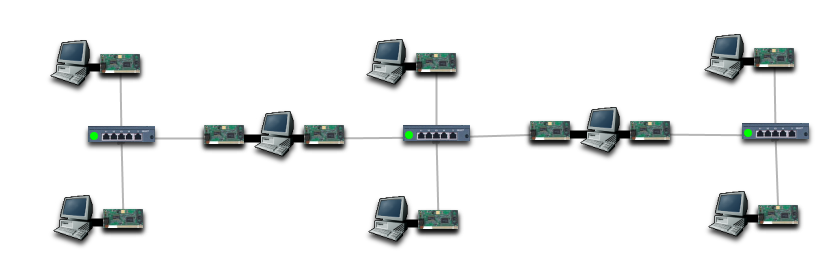

Create an Internet as shown in the following diagram, install all Ethernet cards, enable packet forwarding on both gateways, and provide power to the hubs.

Give the leftmost subnet IP addresses in the 68.24.32.0/24 network, the middle subnet 68.24.30.0/24 and the rightmost subnet 68.24.28.0/24.
Test the connectivity.
Note that the numbers in the last part of each IP address are likely to be different to the numbers above, because you were asked to pick your own.
Add a default route to the two leftmost computers, using the 68.24.32.0/24 IP address of the leftmost gateway.
Make the two rightmost computers have a default route that says to route via the rightmost gateway.
Test the connectivity.
The actual percentage hasn't improved much. The only improvement is that the two leftmost computers can now ping both IP addresses of the leftmost gateway, and the two rightmost computers can now ping both IP addresses of the rightmost gateway.
When a computer on the left pings a computer in the middle, the packet gets to its destination, but the destination doesn't have a route configured to send packets back to the leftmost network.
Add a default route from the leftmost gateway to the rightmost. Also add default routes from the other computers on the middle subnet to the rightmost gateway.
Now add an explicit route to the 68.24.32.0/24 network, from the rightmost gateway, routing via the leftmost gateway.
To do this, right-click on the rightmost gateway, select Add Explicit Route, then in the dialog that appears, enter a destination network of 68.24.32.0, a destination subnet mask of 255.255.255.0, and in the gateway field, the 68.24.30.0/24 IP address of the leftmost gateway. Click OK.
Test the connectivity.